Январь 2023
Читальный зал
Ноты
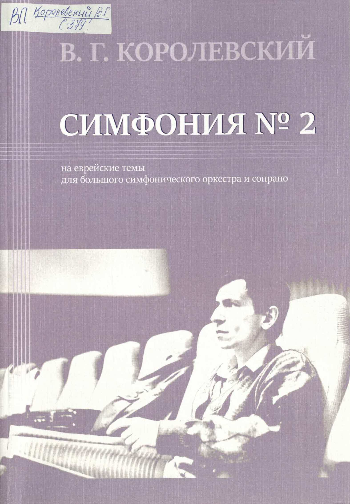
Королевский, Владимир Григорьевич.
Симфония N 2 : для большого симфонического оркестра и сопрано / В.Г. Королевский; в симфонии используется
стихотворение И. Бродского "Натюрморт"; Министерство культуры РФ; Саратовская государственная
консерватория им. Л.В. Собинова. - Партитура. - Саратов : Саратовская гос. консерватория им. Л.В.
Собинова, 2021. - 102 с.
С предисл.
ЧЗ ВП(орг) С-379
ЧЗ ВП(орг) С-379
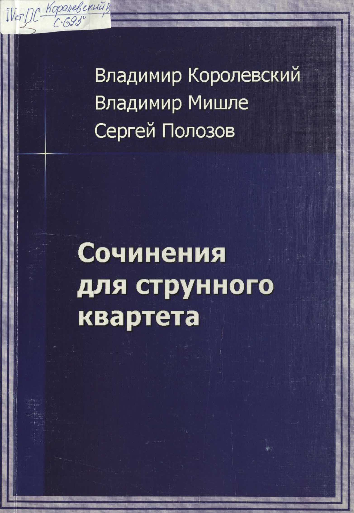
Королевский, Владимир Григорьевич.
Сочинения для струнного квартета / Владимир Королевский; Владимир Мишле; Сергей Полозов; Министерство
культуры РФ; Саратовская государственная консерватория им. Л.В. Собинова. - [Партитура]. - Саратов :
Саратовская гос. консерватория им. Л.В. Собинова, 2012. - 164 с.
С предисл.
IVстПС С-695*
IVстПС С-695*
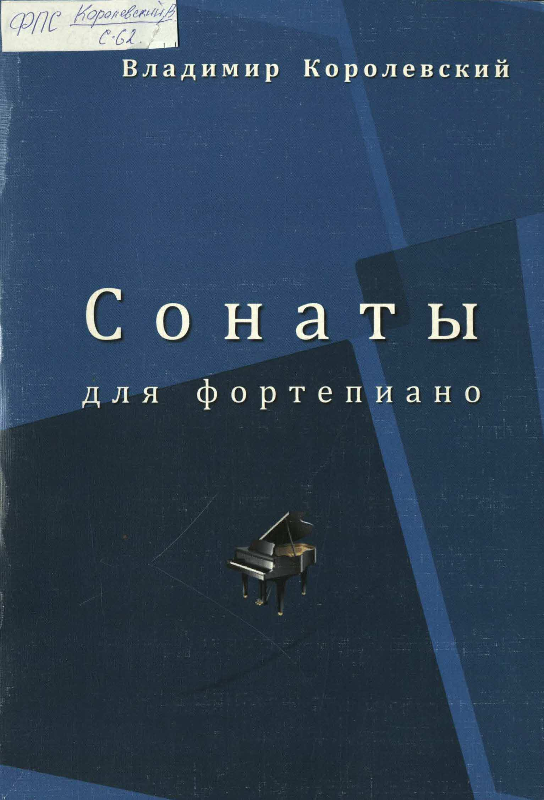
Королевский, Владимир Григорьевич.
Сонаты для фортепиано / Владимир Королевский; Саратовская государственная консерватория (академия) им.
Л.В. Собинова. - [Партитура]. - Саратов : Саратовская гос. консерватория им. Л.В. Собинова, 2012. - 78 с.
С предисл.
ФПС С-62*
ФПС С-62*
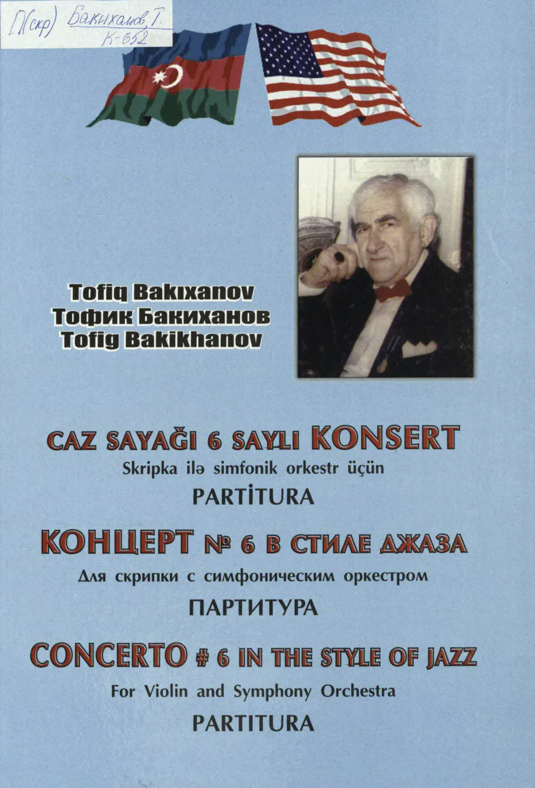
Бакиханов, Тофик Ахмет Ага оглы.
Концерт N 6 в стиле джаза : для скрипки с симфоническим оркестром / Тофик Бакиханов ; под ред. Зауфа
Абдуллаева; посвящается памяти известного американского композитора Джоржа Гершвина. - Партитура. - Баку :
Mutercim, 2009. - 147 с. : портр.
Парал азер., рус., англ.
П(скр) К-652*
П(скр) К-652*
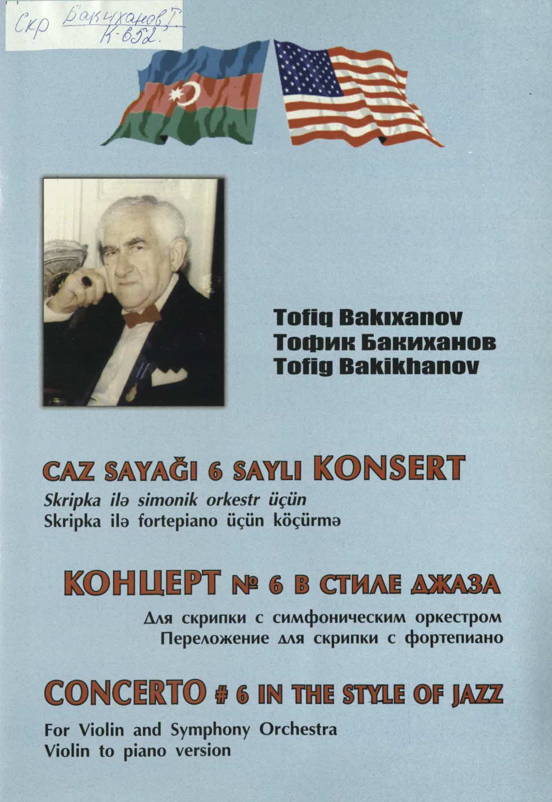
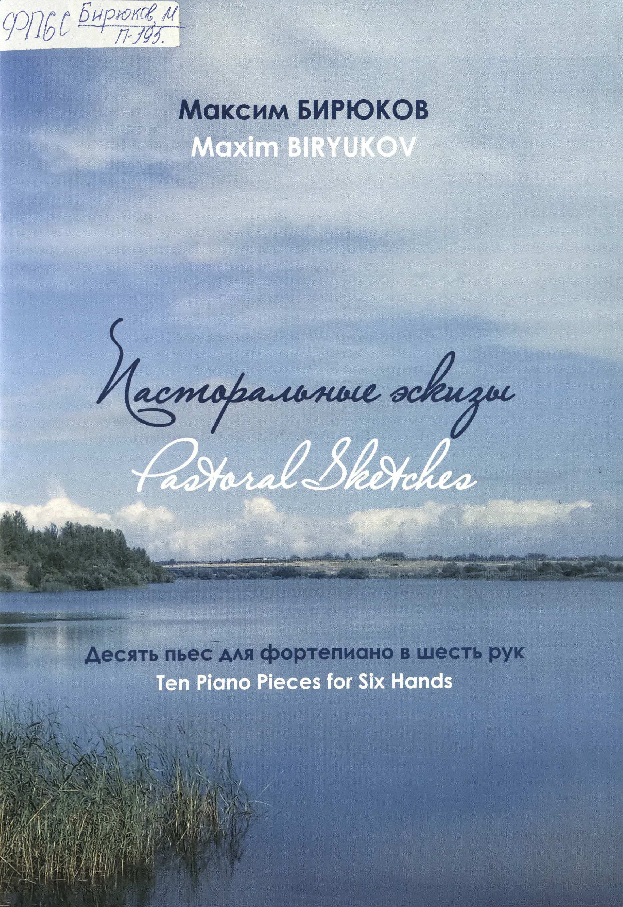
Бакиханов, Тофик Ахмет Ага оглы.
Концерт N 6 в стиле джаза : для скрипки с симфоническим оркестром : переложение для скрипки с фортепиано /
Тофик Бакиханов ; редактор партии скрипки Тохфа Бабаева; посвящается памяти известного американского
композитора Джоржа Гершвина. - Баку : Mutercim, 2009. - 55 с., 1 парт. (12 с.) : портр.
Парал азер., рус., англ.
Скр К-652*
Скр К-652*
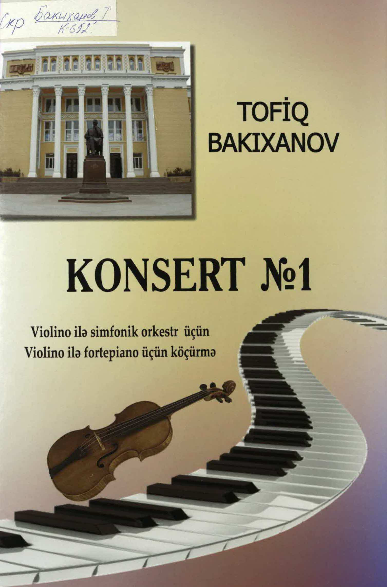
Бакиханов, Тофик Ахмет Ага оглы.
Концерт N 1 : для скрипки с симфоническим оркестром : переложение для скрипки с фортепиано / Тофик
Бакиханов. - Баку : [б. и.], 2021. - 63 с., 1 парт. (21 с.) : портр.
На азерб. яз. - С предисл. - Описание сост. по переводу на рус. яз.
Скр К-652*
Скр К-652*
Книги
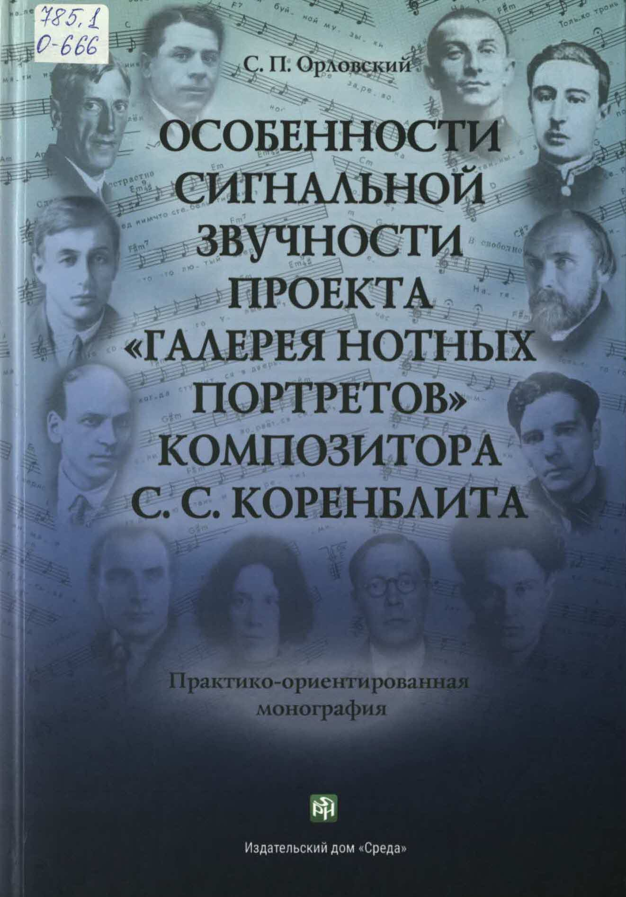
Орловский, Сергей Павлович.
Особенности сигнальной звучности проекта "Галерея нотных портретов" композитора С.С. Коренблита :
практико-ориентированная монография. - Чебоксары : Среда, 2022. - 211 с. : ил., портр., табл. + CD. -
(Теоретические основы Фундаментального Песневедения).
Библиогр.: с. 165-167. - Прил.: 168-196. - Об авторе: с. 197-202.
785.1 О-666
785.1 О-666
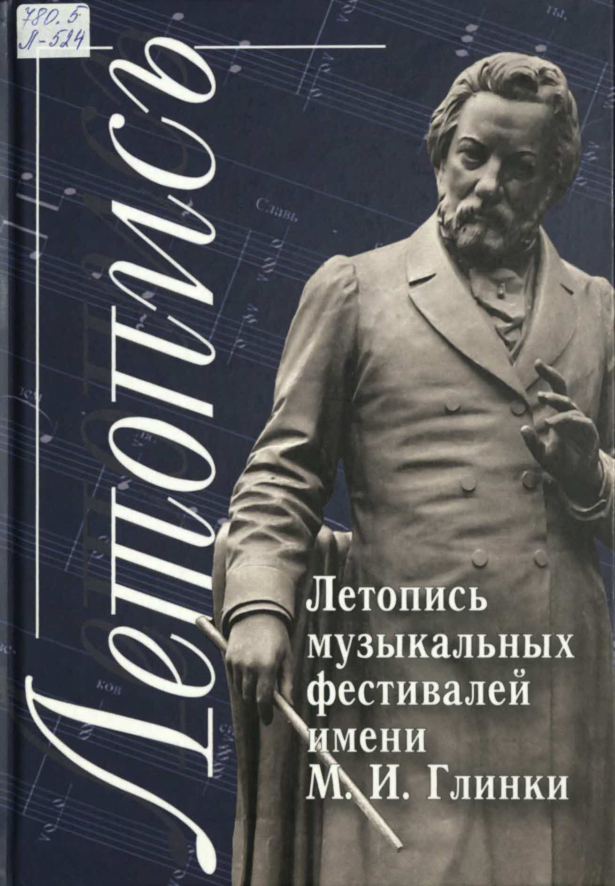
Летопись музыкальных фестивалей имени М.И. Глинки : [сборник] / [сост. Е.М. Лаврухина ; ред. Н.В.
Деверилна]. - Смоленск : Смядынь, 2007
Ч. 2 / сост., авт. вступ. ст. Е.М. Лаврухина; отв. за вып. О.Е. Мальцева. - Смоленск : Свиток, 2017. - 183
с. : ил., фот.
Хроника событий фестивалей (с 1958 по 2017 г.): с. 135-148, участники фестивалей:
с. 149-161, смоляне - участники фестивалей: с. 162-164.
780.5 Л-524
780.5 Л-524
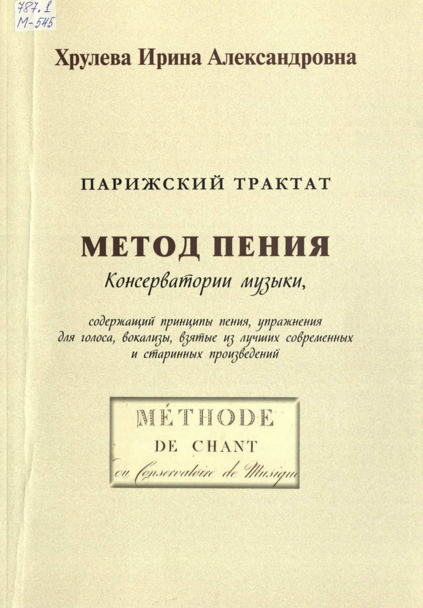
Метод пения Консерватории музыки, содержащий принципы пения, упражнения для голоса, вокализы, взятые из
лучших современных и старинных произведений = Methode de chant du Conservatoire de Musique : парижский
трактат / вступит. ст. и пер. с фр. Ирины Хрулевой; науч. ред. Ефимова Н.И. - Москва:
Композитор, 2022. - 123, [1] с. : нот.
787.1 М-545
787.1 М-545
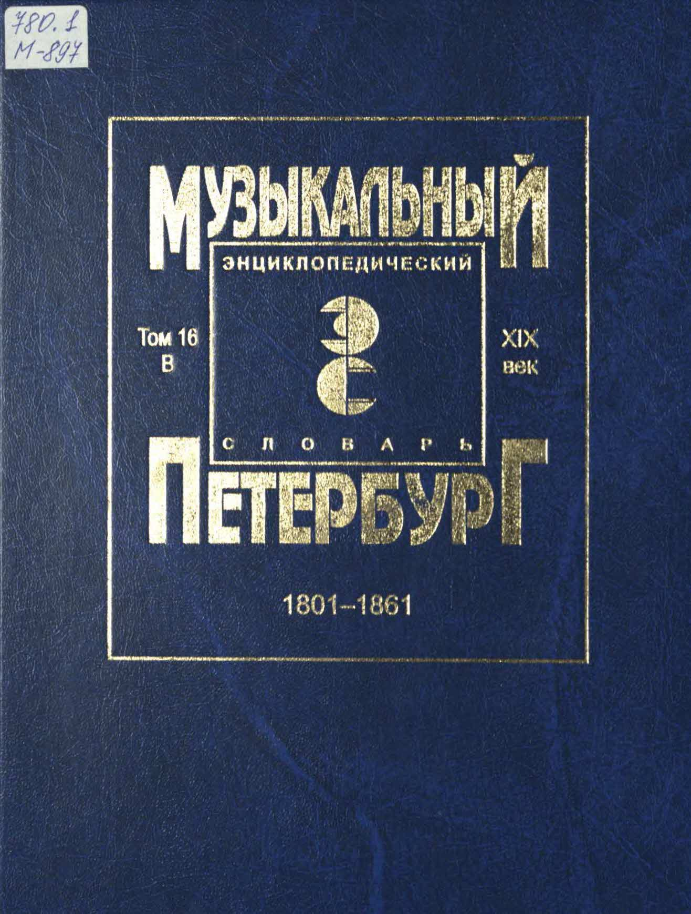
Музыкальный Петербург : энциклопедический словарь / Рос. ин-т истории искусств ; [отв. ред. А.Л.
Порфирьева ; редкол.: Л.Н. Березовчук и др.]. - Санкт-Петербург : Композитор, 1996 -
На рус. яз. - нем. яз. - 300-летию Санкт-Петербурга посвящается.
780.1 М-897
Т. 16: XIX век : 1801-1861 : Персоналии: В. - Композитор, 2022. - 380, [3] c., [32] л. ил. : ил.,
нот., факс., табл.
Библиогр. в конце ст. - Тит. с. парал. на рус. и англ. яз.
780.1 М-897
780.1 М-897
Декабрь 2022
Читальный зал
Ноты
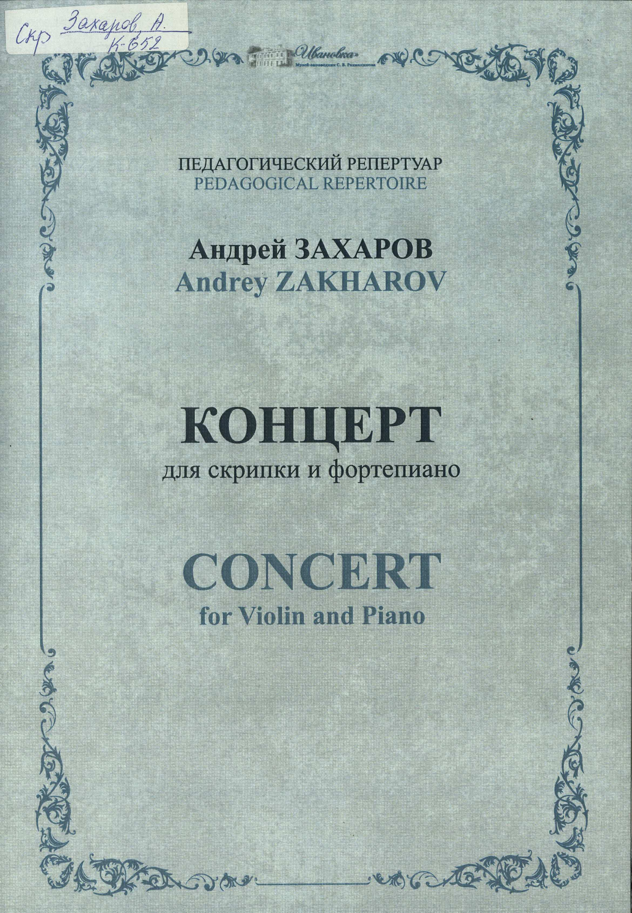
Захаров, Андрей Александрович. Концерт : для скрипки и фортепиано /
Андрей Захаров ; редактор И. Н. Вановская ; Музей-заповедник С.В. Рахманинова
"Ивановка". - Тамбов : Музей-заповедник С.В. Рахманинова "Ивановка", 2022. - 24 с.,
1 парт. (8, с.): цв. портр. Тит. л. и сведения перед нот. текстом парал. рус., англ.
ISMN 979-0-9003366-6-8.
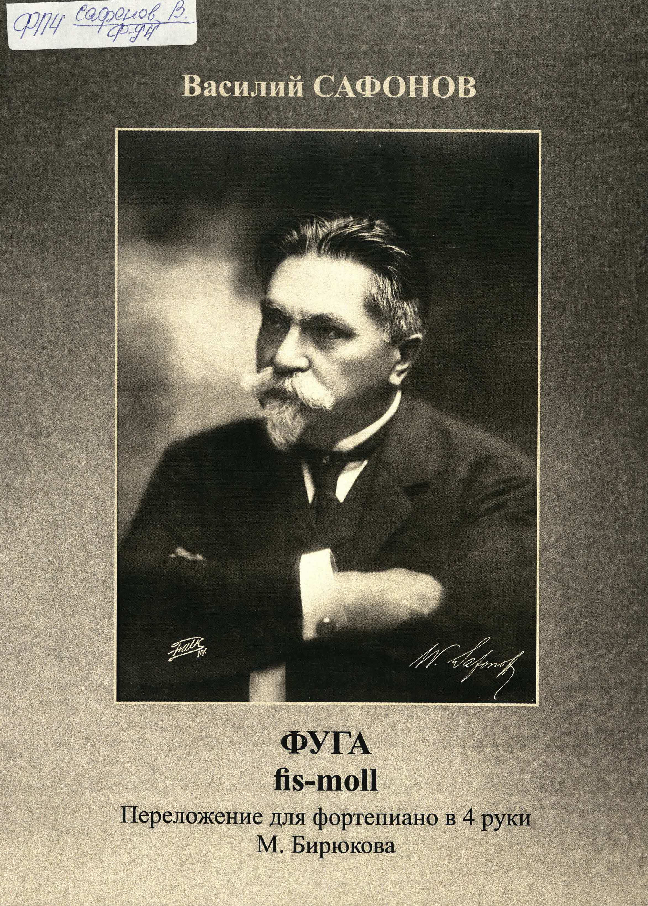
Сафонов, Василий Ильич. Фуга : : fis-moll : для учащихся детских музыкальных школ:
(написана в 1879) / Василий Сафонов ; переложение для фортепиано в 4 руки
[и вступительная статья] М. Бирюкова ; редактор И. Н. Вановская ;
Музей-заповедник С. В. Рахманинова "Ивановка". - Тамбов : Музей-заповедник
С.В. Рахманинова "Ивановка", 2021. - 15, [1] с. : портр., факс.
ISMN 979-0-9003366-1-3.
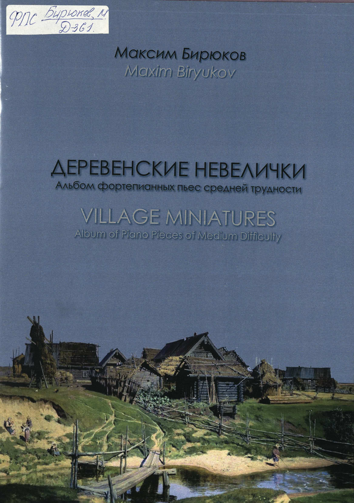
Бирюков, Максим Евгеньевич. Деревенские невелички = Village miniatures:
альбом фортепианных пьес средней трудности : для учащихся музыкальных школ /
Максим Бирюков; Музей-усадьба С.В. Рахманинова "Ивановка". - Тамбов:
Музей-усадьба С.В. Рахманинова "Ивановка", 2019. - 34, [1] с.
С предисл. от авт. - Тит. л., обл., сведения перед нот. текстом и содерж.
парал. рус., англ. Предисл. рус. ISMN 979-0-9003245-6-6.